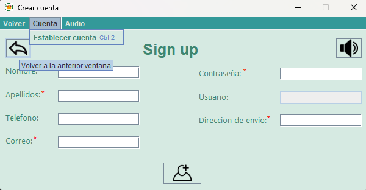
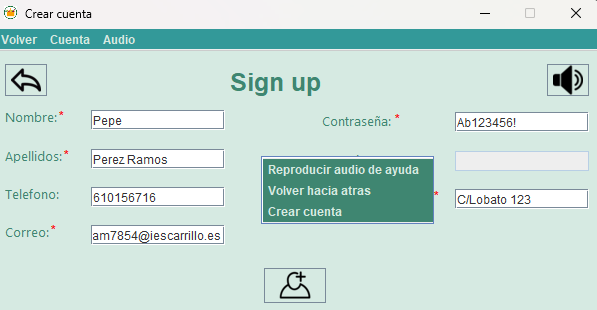

En el caso de que tengamos que crearnos una cuenta nueva deberemos seleccionar el botón ubicado en la parte inferior derecha de la ventana donde está escrito "Registrarse". Una vez pulsado este botón nos aparecerá una nueva ventana donde la aplicación nos pedirá que insertemos nuestros datos para poder crear la cuenta. Después de que introduzcamos los datos deberemos pulsar el botón que contiene una imagen de una persona, el cual nos creará la cuenta o también podemos pulsar en la barra de herramientas ubicada en la parte superior de la ventana el botón llamado "Cuenta" donde se desplegará un botón llamado "Establecer Cuenta" que tendrá la misma función. En el caso de que queramos volver a la ventana anterior podemos pulsar el botón "Volver" ubicado en la barra de herramientas en la parte superior de la ventana o pulsar el botón que contiene una flecha.
Como podemos apreciar tendremos la opcionde ingresar todos nuestros datos siendo los marcados con "*" los obligatorios, asu vez podemosapreciar como la pagina cuenta con diferentes ssistemas de adaptacion como el el audio descrito y la creacion automatica de nombres de usuario
